本文档由实际运行的应用程序自动截图生成。截图保存在 docs/screenshots/，并作为本文档描述 UI 状态的依据。当前截图使用中文界面、xintai.dxf、cadrefs_camera_capture.png 和 query2.txt 生成。
主窗口用于集中显示 DXF 特征树、CAD 画布、属性面板、工具栏和状态栏。它是加载图纸、查看特征、打开注册面板和测量窗口的入口。
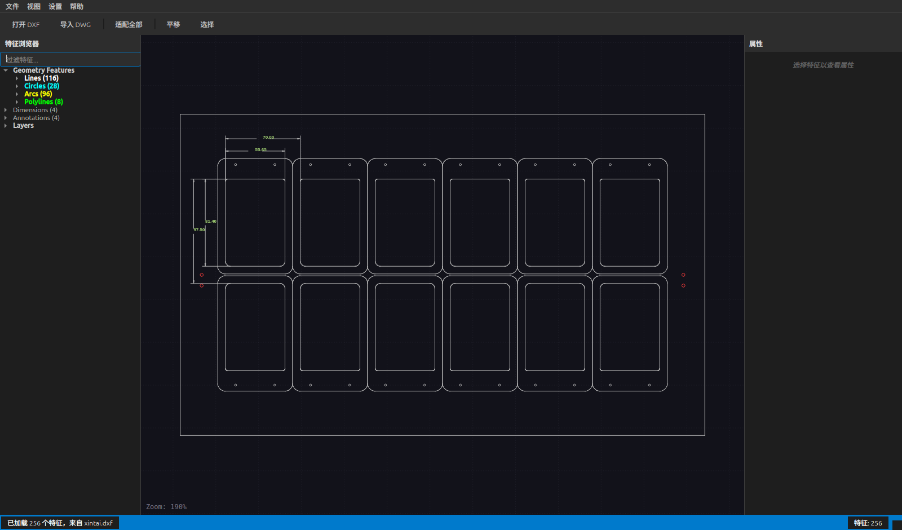
图：主窗口。
Open DXF 打开图纸，或从菜单 File 中选择打开。View 菜单中的 Measurement Window；需要注册时，打开 Registration Panel。主界面应完整显示，底部状态栏显示当前状态，特征计数区域显示当前加载的特征数量。
View 菜单中的面板开关。如果窗口内容不完整，先放大主窗口；如果仍不可见，关闭后重新启动应用。参见第 11 节。
DXF 加载工作流将图纸解析为线、圆、圆弧等可测量 CAD 特征，并填充左侧特征树。
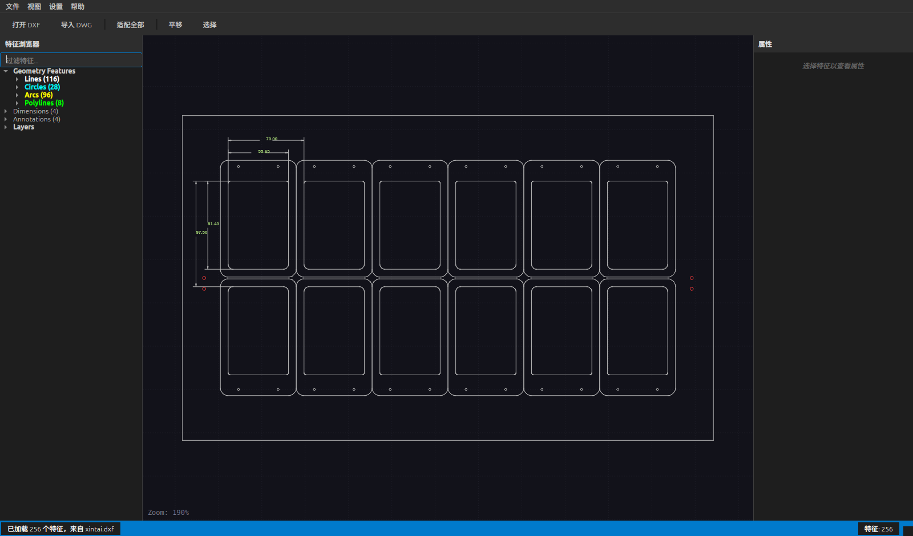
图：DXF 加载完成。
补充局部图：
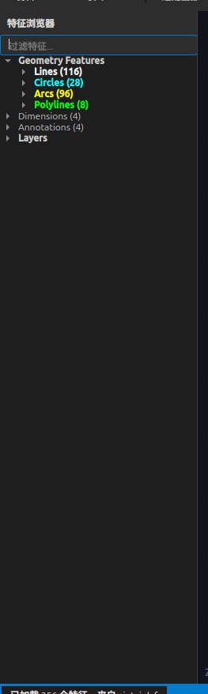
图：DXF 特征树局部。
Open DXF。xintai.dxf 或生产对应的 DXF 文件。状态栏显示已加载特征，特征树列出分类和条目，CAD 画布显示图形。
确认文件路径存在，并优先使用 DXF 格式。DWG 需要先配置转换器。
CAD 画布用于查看图纸、缩放平移、选择特征，并显示图像叠加、注册结果和测量调试结果。
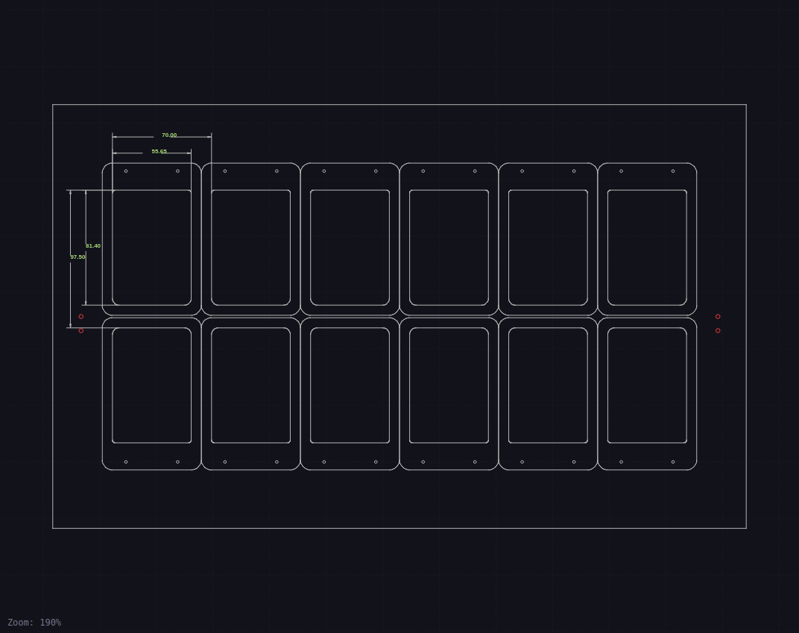
图：CAD 画布。
Fit All 适配全部图形。CAD 线条保持图纸颜色；拟合线、拟合圆和圆弧拟合圆以绿色显示。
Fit All。如果 CAD 与图像错位，重新执行自动注册，并检查 P1/P2 ROI 是否框住基准圆。
相机实时预览窗口用于对焦、观察采集画面，并调整曝光、Gamma、对比度、模拟增益和镜像参数。
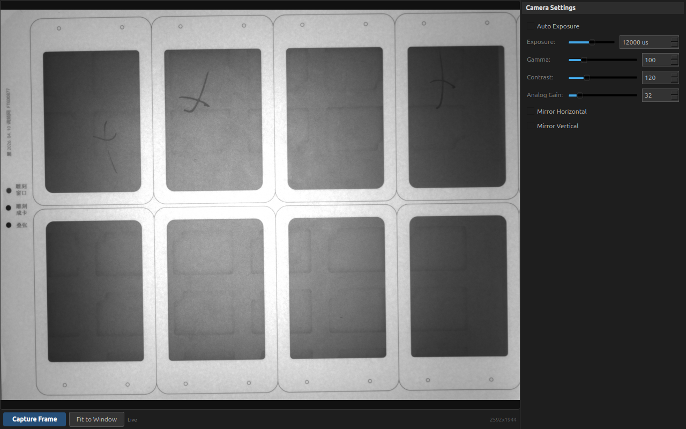
图：相机实时预览与参数。
参数局部图：
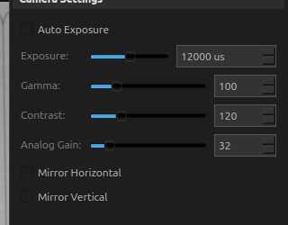
图：相机参数局部。
Open。Focus Preview 打开实时预览窗口。Capture Frame 将当前帧送入测量流程。左侧显示实时图像，右侧显示参数控件，底部显示采集按钮和分辨率。
No camera detected：系统未识别相机或驱动未加载。先刷新设备列表，再检查相机连接、驱动和权限。无相机时可用文件图像进行注册测试。
标定窗口用于计算像素尺寸 mm/px，并执行镜头畸变标定。标定结果会影响注册和测量精度。
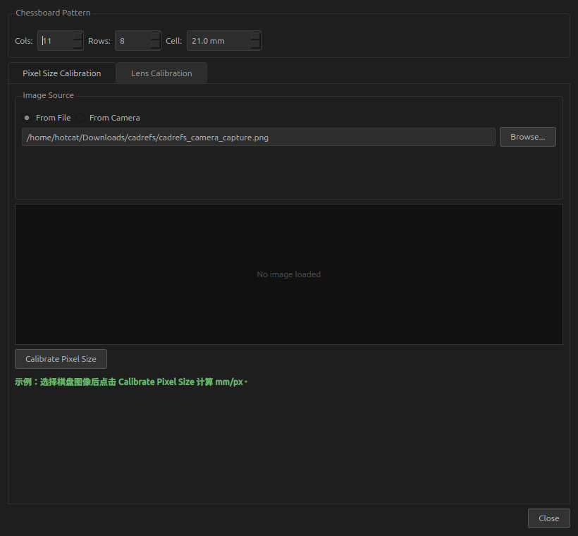
图：像素尺寸标定页。
镜头标定页：
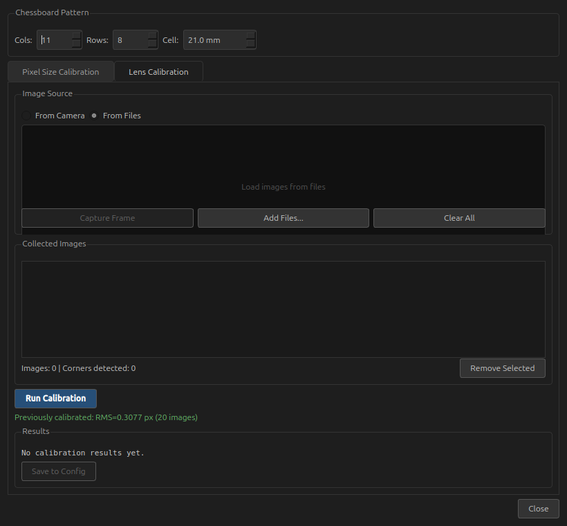
图：镜头标定页。
Settings 菜单打开 Camera Calibration...。Pixel Size Calibration 中选择棋盘图像，点击 Calibrate Pixel Size。Lens Calibration 中添加多张棋盘图像，点击 Run Calibration。像素尺寸页显示 mm/px；镜头标定页显示 RMS 误差和保存按钮。
使用清晰、无遮挡、不同位置和角度的棋盘图像；确认 Cols 和 Rows 是内角点数量。
自动注册配置通过两个 CAD 基准圆和图像 ROI 自动求解相机图像到 CAD 的变换。
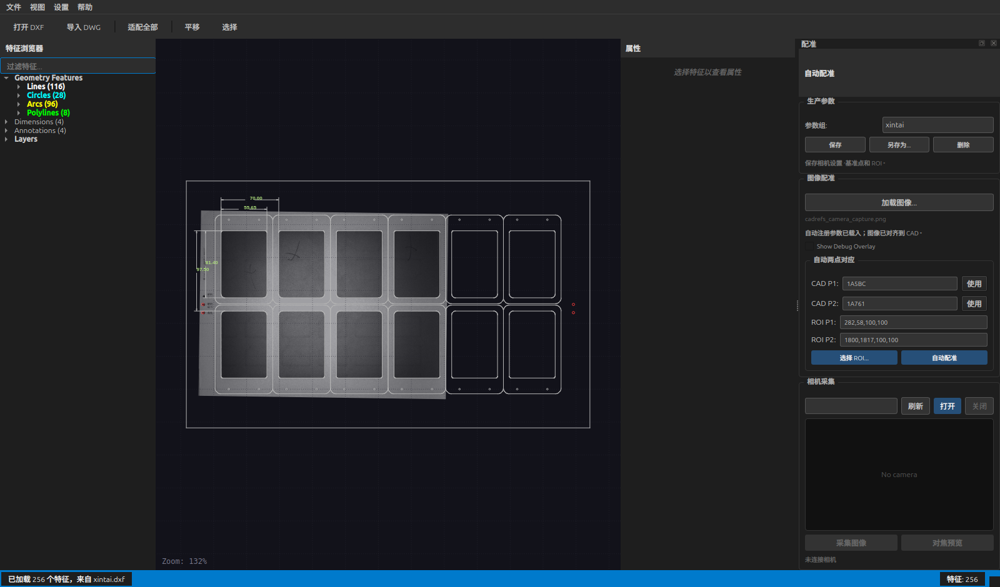
图：自动注册配置。
局部放大：
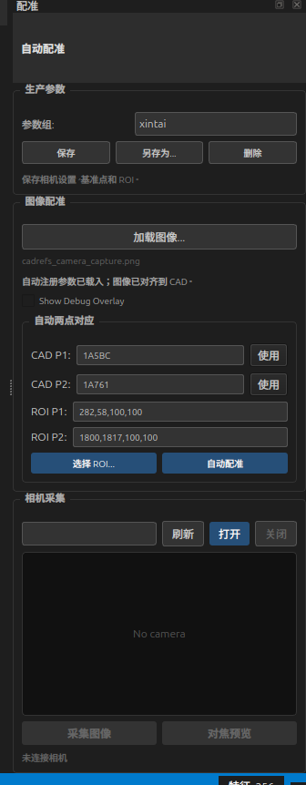
图：自动注册配置局部。
Production Parameters 中选择生产参数配置。x,y,w,h。Auto Register。状态区显示自动注册成功，图像与 CAD 对齐，画布中基准圆位置一致。
使用 Pick ROIs... 重新框选，确认 CAD P1/P2 与图像 P1/P2 一一对应。
测量查询编辑器用于编写测量指令、运行评价、查看 Value/Nominal/Deviation/Threshold/Status 表格，并进入生产日志查看器。
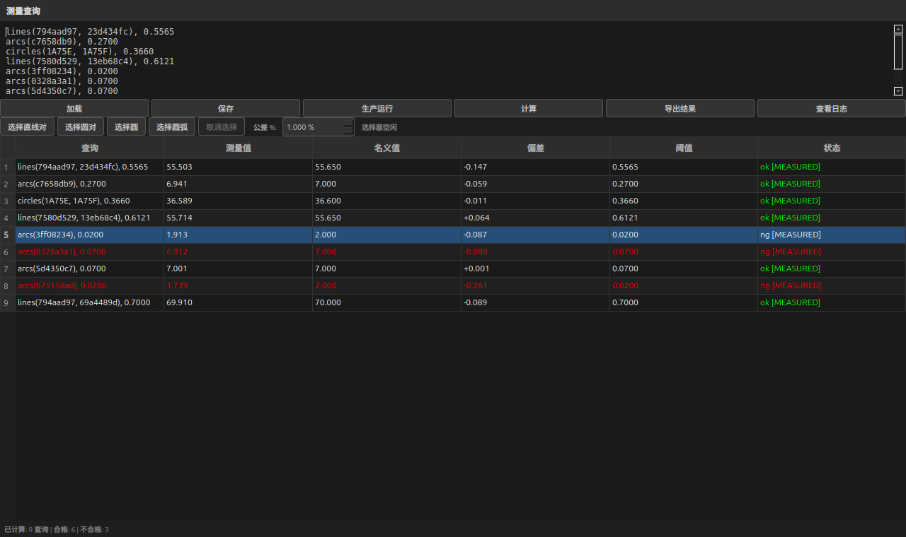
图：测量查询编辑器。
结果表局部图：
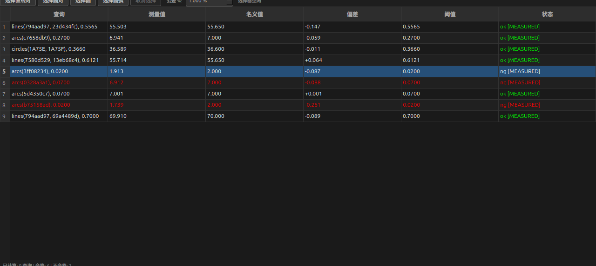
图：测量结果表局部。
Measurement Window。Load 载入查询文件，或直接输入查询。lines(ID1, ID2)、circles(ID1, ID2)、circle(ID)、arcs(ID)。Evaluate。Run Production 可按生产流程采集、注册、评价并保存日志。表格显示 Query、Value、Nominal、Deviation、Threshold、Status。OK/NG 状态用于快速判断是否超差。
No Measurement：图像未加载、未注册或边缘拟合失败。优先检查 DXF 是否正确加载；然后检查图像、自动注册和 ROI；最后检查查询语法。
选择测量结果后，画布会显示对应测量调试叠加。拟合线和拟合圆为绿色，CAD 线条保持原颜色。圆弧查询会显示绿色拟合整圆，便于判断拟合质量。
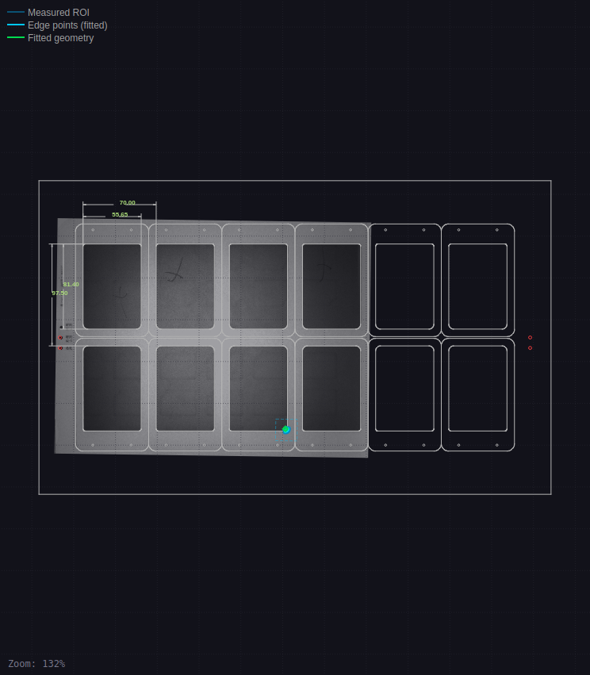
图：测量叠加显示。
被选查询的特征被高亮，绿色拟合几何与图像实际边缘重合。
重新执行自动注册；必要时调整相机曝光，确保目标边缘清晰。
生产日志查看器按日历组织生产测量记录，按 OK/NG 分类，并显示每条记录的查询结果表。日志可用于复查 CAD、相机图像、注册参数和测量结果。
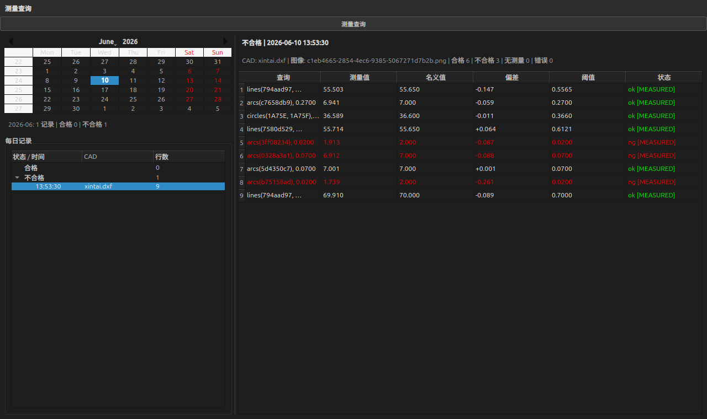
图：生产测量日志查看器。
结果表局部图：
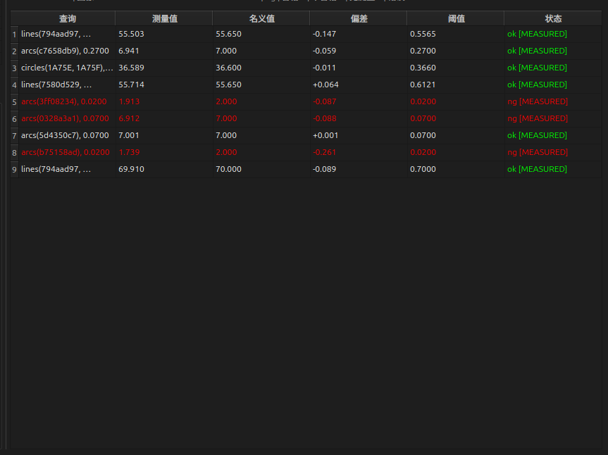
图：日志结果表局部。
View Logs。Measurement Queries 返回实时查询编辑器。日历显示记录分布，左侧按 OK/NG 分类，右侧显示与查询编辑器一致的结果表头。
保留生产图像和 CAD 文件；日志记录中包含文件名、仿射矩阵、注册参数和标定参数。
错误信息用于指出查询语法、ID 解析、图像测量或生产流程中的失败原因。
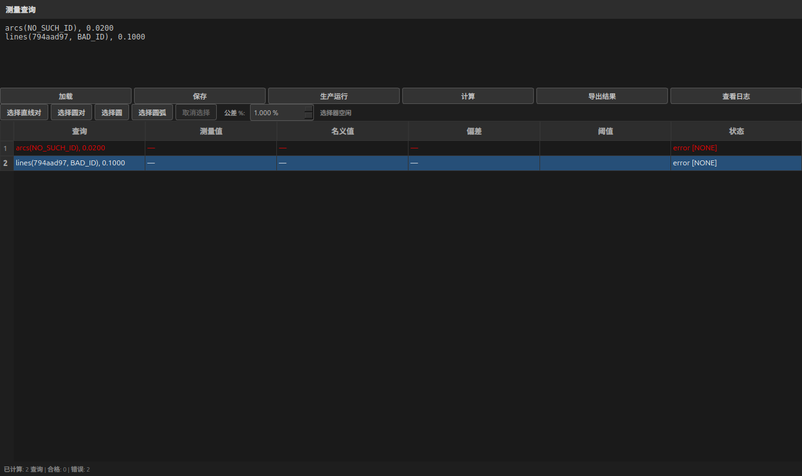
图：查询错误信息。
错误表局部图：
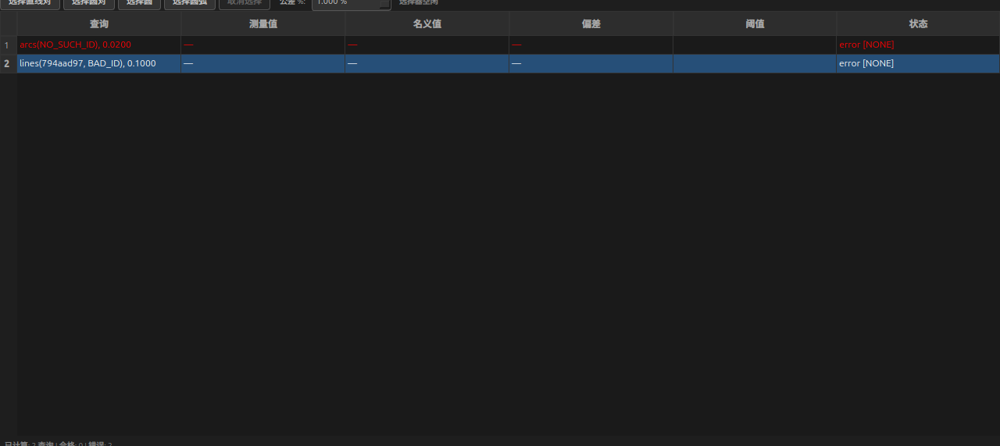
图：错误结果表局部。
警告对话框示例：
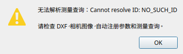
图：警告对话框。
Cannot resolve ID，检查查询 ID 是否存在于特征树。Evaluate。错误行不会被误判为 OK；用户可以根据错误文本定位问题。
使用 Pick Lines Pair、Pick Circle、Pick Arc 生成查询，可减少手写 ID 错误。
本节展示常见生产问题的界面状态，帮助操作员快速定位问题。
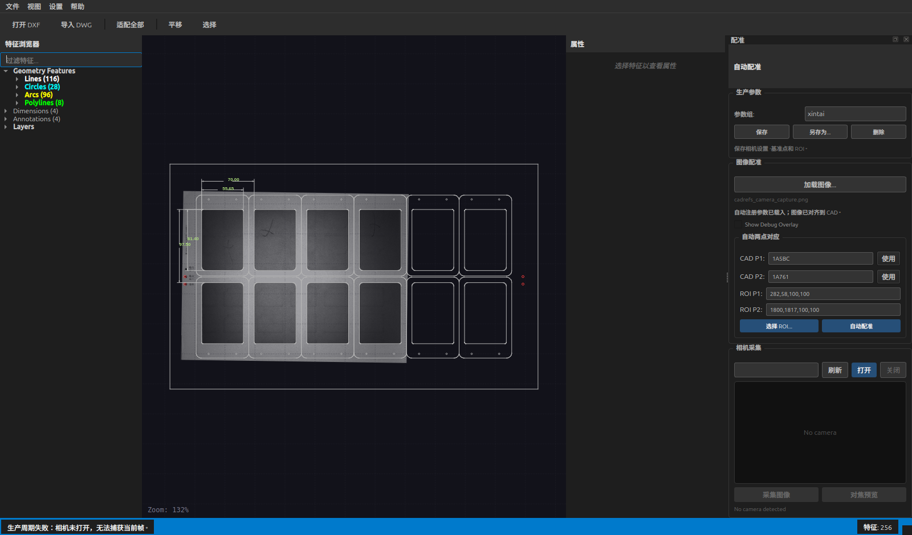
图：无相机故障排查示例。
Run Production 失败，先查看底部状态栏。Refresh 并检查硬件连接。Load Image... 载入图像文件。问题原因应能从状态栏、相机状态或测量结果表中定位。
按顺序检查：相机连接 → 图像是否加载 → 自动注册 P1/P2 → 查询语法 → 测量结果表。
| 文件 | 说明 |
|---|---|
| 01_main_window.png | 主窗口 |
| 02_dxf_loading.png | DXF 加载完成 |
| 02a_feature_tree_crop.png | DXF 特征树局部 |
| 03_cad_canvas.png | CAD 画布 |
| 04_auto_registration_configuration.png | 自动注册配置 |
| 04a_auto_registration_crop.png | 自动注册配置局部 |
| 05_camera_live_preview_parameters.png | 相机实时预览与参数 |
| 05a_camera_parameters_crop.png | 相机参数局部 |
| 06_calibration_dialog.png | 标定窗口 |
| 06a_lens_calibration_tab.png | 镜头标定页 |
| 07_query_measurement_editor.png | 测量查询编辑器 |
| 07a_query_results_table_crop.png | 测量结果表局部 |
| 08_measurement_overlay_canvas.png | 测量叠加显示 |
| 09_measurement_log_viewer.png | 生产测量日志查看器 |
| 09a_log_results_table_crop.png | 日志结果表局部 |
| 10_error_messages_query.png | 查询错误信息 |
| 10a_error_table_crop.png | 错误结果表局部 |
| 11_troubleshooting_no_camera.png | 无相机故障排查示例 |
| 10b_warning_dialog.png | 警告对话框 |
{kind=link}
{kind=link}
{kind=link}
{kind=link}
{kind=link}
{kind=link}
{kind=link}
{kind=link}
{kind=link}
{kind=link}
{kind=link}
{kind=link}
{kind=link}
{kind=link}
{kind=link}
{kind=link}
{kind=link}
{kind=link}
{kind=link}